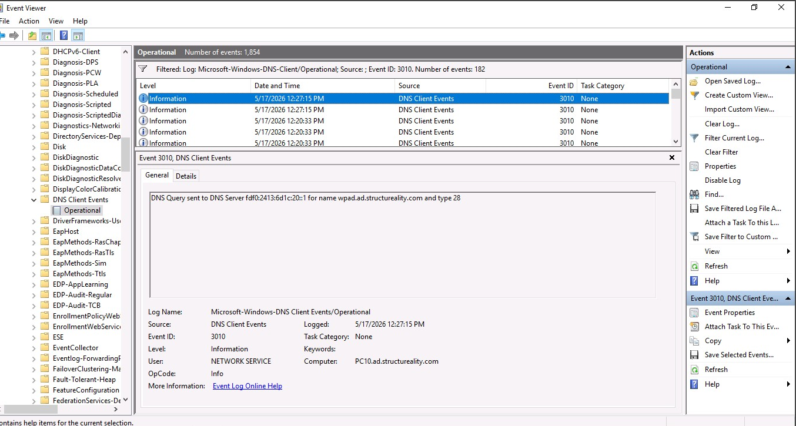
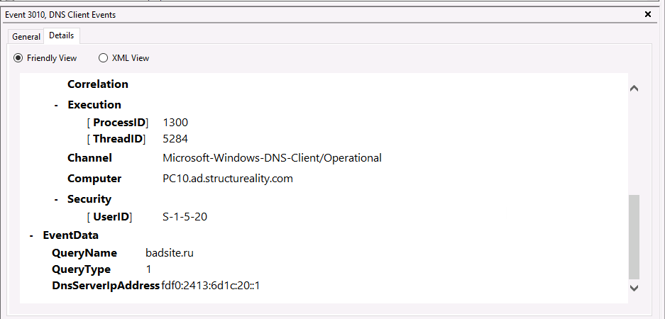

Project Overview
This case study documents the review of Windows DNS Client Operational logs to identify suspicious domain resolution activity. The investigation focused on endpoint DNS evidence, IOC documentation, MITRE ATT&CK mapping, and recommended SOC follow-up actions.
Objective
The objective was to review DNS-related Windows Event Logs, identify suspicious domain activity, document observed indicators, and determine whether additional containment or monitoring actions were required.
Investigation Timeline
badsite.ru identified.Indicators Observed
Analysis
The DNS Client Operational log recorded a query for badsite.ru from host PC10.ad.structureality.com. DNS activity alone does not confirm endpoint compromise, but suspicious domain resolution is a useful indicator for triage because it can be associated with phishing interaction, malware callback activity, command-and-control infrastructure, or unauthorized browsing behavior.
Analyst Notes
Windows DNS Client Operational logs can provide strong endpoint-level visibility into domain resolution activity. A suspicious domain query should be correlated with browser history, proxy logs, endpoint alerts, and other DNS requests across the environment before determining whether the host is compromised.
MITRE ATT&CK Mapping
- T1071.004 - Application Layer Protocol: DNS: adversaries may use DNS for command-and-control traffic, malware callbacks, or infrastructure communication.
- T1568 - Dynamic Resolution: malicious infrastructure may rely on DNS resolution to direct hosts toward attacker-controlled systems.
Final Verdict
Suspicious DNS Activity Identified
Windows DNS Client logs recorded a query for a suspicious domain. The event did not confirm compromise by itself, but it warranted additional monitoring, domain reputation review, and investigation into related endpoint activity.
Recommendations
- Review the domain reputation using VirusTotal or another threat intelligence source.
- Search for additional DNS requests to the same domain across the environment.
- Review browser history, proxy logs, or endpoint security alerts associated with the host.
- Block the domain if confirmed malicious.
- Preserve relevant DNS and endpoint logs for follow-up investigation.
Lessons Learned
- DNS Client logs can provide valuable endpoint-level visibility into suspicious domain resolution.
- Suspicious DNS activity should be correlated with additional endpoint and network evidence.
- DNS indicators can support early triage even when compromise is not yet confirmed.
- MITRE mapping helps communicate why DNS activity matters in a SOC investigation.
Investigation Evidence
Selected screenshots from the investigation workflow. These visuals support the written analysis and help show the investigation process.

DNS Client Operational log showing Event ID 3010 entries tied to suspicious DNS query activity.

Event ID 3010 details confirming a DNS query for badsite.ru, supporting suspicious domain resolution activity.